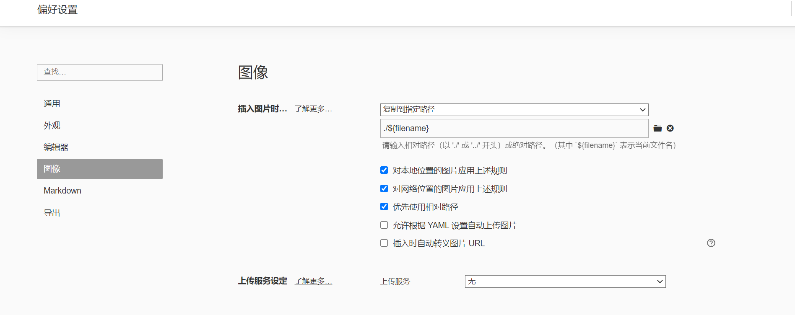
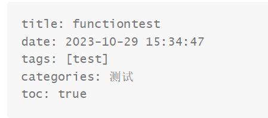

hexo博客搭建记录
目录跳转：
花了一下午把hexo博客搭好了，这里简单记录一下搭建的过程。
本文的安装过程主要参考这位dalao的博客：
https://hasegawaazusa.github.io/hexo-note.html
搭建hexo博客
1.前置环境
Git
由于博客是搭在git上的，因此需要绑定好 Github 的账号与邮箱，并能够建立连接
具体操作请参考：Git的绑定与连接
Node.js
2.安装hexo
1 | npm install -g hexo-cli # npm 安装 hexo |
3.初始化hexo
1 | hexo init blog # 初始化 hexo |
其中，blog 为博客的根目录，其名称可以自定义。
1 | cd blog # 切换到博客根目录 |
4.hexo生成静态网页文件
1 | hexo generate # 自动化生成静态网页文件 |
该命令可以简写为
1 | hexo g |
5.开启hexo服务
1 | hexo server # 开启服务 |
开启hexo服务后，即可通过本地访问 blog 页面（默认为 localhost:4000 ）预览博客页面。
相关参数：
1 | hexo s # 简化指令 |
6.部署博客
这里使用Github仓库进行部署。
首先在Github创建一个名为 <username>.github.io的仓库，例如我的就是t3uk1.github.io。
在博客根目录下安装 hexo-deployer-git 部署插件
1 | npm install hexo-deployer-git --save |
更改 hexo 站点配置文件 (~/_config.yml) 中的 Deployment配置项
以我为例更改的配置项结果为
1 | deploy: |
上面
repo使用 ssh 链接的原因：我的 git 使用 ssh 与 github 进行远程连接如果git 使用 https 与 github 进行远程连接请使用 https 链接
在博客根目录下，输入部署指令
1 | hexo deploy # 部署指令 |
简化指令：
1 | hexo d |
一键部署指令：
1 | hexo clean && hexo g -d |
等待一段时间后，可以通过 https://<username>.github.io 访问自己的博客。
例如我的链接就是：https://t3uk1.github.io
hexo入门操作
1.hexo更新
1 | npm update -g hexo-cli # 使用 npm 更新 hexo |
2.hexo 新建博文
1 | hexo new hello # 新建博文 |
hello可自由更改，对应生成的md文件名
可选的额外选项：
1 | hexo n hello # 简化指令 |
然后进入 ~/source/_posts/ 找到 hello.md ，打开文件，内容如下
1 | title: hello |
该头为 Front-matter ，参数如下：
title→ 博文标题date→ 发布日期，默认为文件创建日期tags→ 博文标签
修改后，在正文处输入内容即可编辑博文内容。.md格式文本示例如下：
1 | --- |
3.hexo 主题
进入 https://hexo.io/themes/ 进行挑选合适的主题
这里以配置 NexT 主题为例：
打开 Powershell 输入以下命令，安装 NexT 主题
1 | npm install hexo-theme-next --save |
更改 hexo 站点配置文件 (~/_config.yml) 中的Extensions配置项
1 | theme: next |
重新进行网页生成即可
1 | hexo clean # 清除缓存 |
本博客使用了另一个主题，配置与NexT有些不一样，详情请看：hexo主题配置-reimu
4.hexo 博文插入超链接
对于站外的超链接，直接将外站的完整链接贴入括号内即可 ([value](link))，例如
1 | 点击[这里](https://t3uk1.github.io/)进入博客 |
效果如下
点击这里进入博客
如果要使跳转后的页面在新页面中打开而不是在当前页面打开，可以直接使用html标签的形式实现：
1 | <a href="https://t3uk1.github.io/" target="_blank">这里</a> |
效果如下：
点击这里在新页面打开博客
5.hexo 博文插入图片
更改博客根目录下配置文件~/_config.yml中相关属性：
1 | post_asset_folder: true |
在博客根目录下安装**hexo-asset-image**插件
1 | npm install hexo-asset-image --save |
将相关图片资源放进对应文件夹并直接使用文件夹内的资源即可。
修改插件：
在装好插件更新博客之后，发现图片加载不出来，查看网页中图片的路径的时候发现路径有点不对劲，一查发现是插件有bug，需要修改插件才能使图片路径正常。
进入博客的根目录，然后下面顺序找到
index.js:node_modules–>hexo-asset-image–>index.js用VS Code 或者 记事本打开
index.js在第 58 行，可以找到这么一行代码：
1
$(this).attr('src', config.root + link + src);
将其改为:
1
$(this).attr('src', src);
保存文件
使用typora可以比较方便的实现图片的引用，具体操作如下：
偏好设置→图像，插入图片选项选择复制到指定路径，下面勾选和下图一样，保存。

这样设置之后，当执行
1 | hexo new 'file' |
的时候，会顺带创建一个与md文件同名的文件夹，当 Typora 插入图片时，会自动将图片资源复制进入 hexo 可以检索的 asset 文件夹。
6.hexo 添加标签页
在博客根目录下：
1 | hexo new page tags |
在 Front-matter 中添加：
1 | type: tags |
完成后 hexo 便会自动生成标签页

7.其他页面的添加
由于我现在用的主题里面关于页面、友链和404等已经添加好了，如果要手动添加的请参考其他dalao的博客。
如果需要其他自定义页面，可以使用 layout 参数
8.页内跳转目录的设置
安装toc插件
1 | npm install hexo-toc --save |
在根目录下配置文件中添加关于toc的设置：
1 | toc: |
mindepth表示最低搜索深度，maxdepth表示最大搜索深度，搜索深度对应文章标题等级(h1-h…)，如上面的就是只显示h2标题到h3标题的目录。
在markdown文件中使用toc插件：
只需要在需要插入导航的地方加一句
1 | <!-- toc --> |
就能自动创建能够实现页内跳转的目录。
关于toc插件详情请参考:
https://github.com/bubkoo/hexo-toc
hexo 配置详解
hexo 博文头 - Front-matter
| 参数 | 意义 | 默认值 |
|---|---|---|
layout |
排版 | config.default_layout |
title |
标题 | 文件名 |
date |
发布日期 | 文件创建日期 |
updated |
更新日期 | 文件更新日期 |
comments |
简介 | true |
tags |
标签 | |
categories |
分类 | |
permalink |
永久链接的相对路径 (如/index.html) |
null |
excerpt |
纯文本摘录 (需要使用插件Post-Excerpt) | |
disableNunjucks |
是否禁用 Nunjucks 的宏 ({{ }} / {% %}) 和 tag plugins 插件 |
false |
lang |
指定语言 | _config.yml |
hexo 站点配置文件详解
即 ~/_config.yml 参数详解
网站 - Site
title→ 博客标题
1 | # Site |
网址 - URL
1 | # URL |
一般只需要修改**
url**
目录 - Directory
1 | # Directory |
一般无需修改
文章 - Writing
1 | # Writing |
首页设置 - Home page setting
1 | # Home page setting |
分类 & 标签 - Category & Tag
1 | # Category & Tag |
日期 / 时间格式 - Date / Time format
1 | # Date / Time format |
分页 - Pagination
1 | # Pagination |
扩展 - Extensions
1 | # Extensions |
部署 - Deployment
1 | # Deployment |